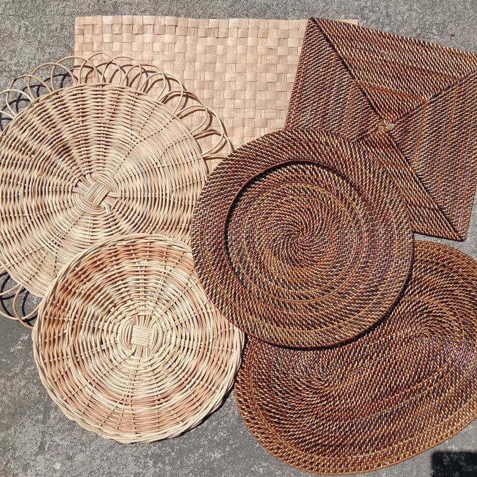
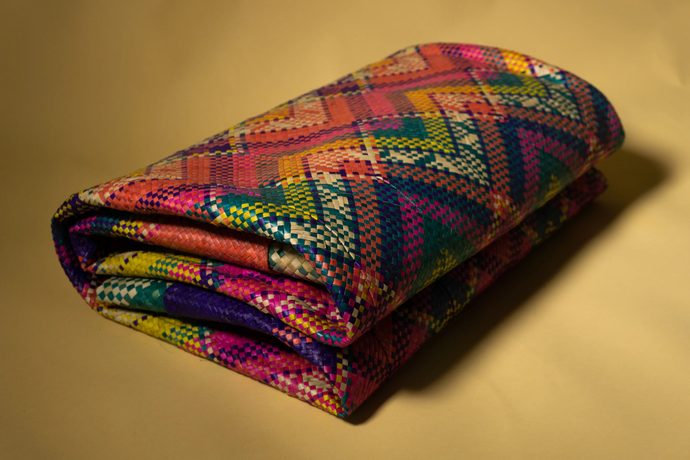

Featured Products

Buntal Hat
Handcrafted Filipino Buntal Hat

Abaca Basket
Eco-friendly woven baskets

Abaca Placemats
Handwoven placemats for your home

Abaniko
Traditional Filipino hand fan

Banig
Traditional handwoven mat

Walis Tambo
Hand-crafted broom made from the flower stalks of Tiger grass